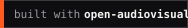

Made with
What runs on it
Performances, installations, tools and classes built on open-audiovisual. Every entry is here because the person who made it added it. The list starts with the works the framework was taken out of.
2 entries
-
Performance · 2026
The Last Input
by Che-Yu Wu
A 14-scene performance made during a C-LAB Taiwan Sound Lab / IRCAM residency and played on a 49.4-channel speaker dome. The core of open-audiovisual was taken out of this show: its timeline, chord semantics, MIDI learn and OSC batching ran here first.
- @openav/timeline
- @openav/chord
- @openav/mapping
- @openav/osc
-
Tool · 2026
cheyuwu-lab
by Che-Yu Wu
A studio of generative sketches where every sketch can be played from a controller, a phone or a hand. Its controllers, instruments, drum machine and recorder are open-audiovisual packages, rebuilt from the framework every night.
- @openav/midi
- @openav/sound
- @openav/drums
- @openav/record
- @openav/remote
- @openav/leap
Add yours
A sketch on OpenProcessing with the one line in it counts. So does a show that uses a single package.
- Open the “I made this” form on GitHub and fill in the title, your name, a link and one or two sentences. We add the entry.
- Or edit
made-with/works.jsonyourself and open a pull request: one object per work, the fields are the ones you see in the file.
An entry is a link and a few words. We host nothing of yours, and the work stays yours. Ask for a change or a removal the same way, at any time.
The badge
If you want your page to say so, paste this where your credits are:

<a href="https://openaudiovisual.com/"><img src="https://openaudiovisual.com/assets/made-with/badge.svg" width="188" height="28" alt="Built with open-audiovisual"></a>
How a page says what it runs on
A show started with createShow() puts one tag in its page: <meta name="generator" content="open-audiovisual 0.11.0">. It is the same tag WordPress and Hugo leave. Nothing is sent anywhere: it is there for a person who views the source, and for searches and censuses of the public web. createShow({ signature: false }) leaves it out.
Separately, a show and an embedded controller send one anonymous hit that carries the address of the site they run on and nothing else, and telemetry: false switches it off. The one line for p5.js sends nothing unless you turn it on. What is sent, what is never sent, and every off switch.